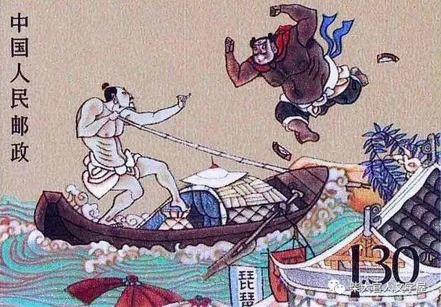

李逵夺鱼(闹江州)
《李逵夺鱼》又名《闹江州》，言前辙。取材于《水浒传》第三十八回《及时雨会神行太保，黑旋风斗浪里白条》。
写宋江发配江州，与戴宗同往酒楼饮酒，结识黑旋风李逵。为增菜肴，李逵到江边买鱼，因身上无钱，被渔人张顺骂作讹鱼无赖，李逵怒而夺鱼，与张顺拳脚相搏。在旱地张顺不是对手，便引李逵上船打斗，乘势将船踩翻。李不识水性，在水中不敌张顺，险些丧命。幸宋江赶到解劝，李、张二人结为朋友。京韵大鼓亦有此唱段。
山东快书的《李逵夺鱼》最早为清末由山东大鼓鼓词移植而来。1956年，山东省戏曲工作组在高元钧、周侗宾等人口述稿的基础上，结合山东大鼓唱词，重新整理了这个段子。当时的整理者认为，《李逵夺鱼》原词对李逵这一农民英雄形象有所歪曲，把李逵写成了一个酗酒讹人的无赖。且前半部宋江起解见戴宗一节所占篇幅太长，主人公李逵出场太晚，唱起来不紧张。在这种思想的指导下，整理本删去了宋、戴相认一段，直接从李逵写起，同时吸收了周侗宾唱词中的李逵赠金情节，不但正面地突出了人物，而且也为买鱼没钱暗伏一笔。整理本故事紧凑，情节细腻，在山东快书唱段中属上承之作。
该版整理完成后，由杨立德多次试演定稿，并随后出版了单行本。1959年9月，收入向国庆十周年献礼的《山东传统曲艺选》。
===========================================
苗清臣丨李逵夺鱼（经典渔鼓唱词）
李逵夺鱼
（苗清臣整理）
宋江发配到江南
戴宗接风进酒馆
二人楼上刚落座
下边来了一将员
面黑如同铁锅底
两眼好像咸鸭蛋
腰粗膀宽高满丈
好像半截塔一般
要问他是哪一个
姓李名逵黑大汉
爱打不平惹下祸
连夜逃走下江南
这日无事大街串
上了酒楼要进餐
戴宗一见叫贤弟
快过来见过押司宋老三
李逵拜过开言问
三哥为啥到此间
宋江说，自从杀死阎婆惜
充军发配到这边
到此地没有朋和友
还得贤弟多照应
李逵说，别说杀了阎氏女
你杀了朝廷我敢担
高叫堂馆添酒菜
小堂馆一盘一盘往上端
李逵喝了几杯酒
他说，酒好菜不全
三哥楼上把我等
买条鲤鱼配酒菜
大街没鱼市上找
市上无鱼到江边
黑李逵站在江岸抬头看
水上头歪啦歪啦来了三只打渔船
李逵观罢摆了摆手
大叫一声像雷般
把你舟船拢拢岸
我买条鲤鱼下酒餐
渔夫闻天开言道
今天买鱼可不沾
这船鲜鱼官府要
你想买鱼到明天
气得他把虎眼瞪
哇哇怪叫挥舞拳
快快把船靠过来
管他狗官不狗官
渔夫闻听心害怕
抛下了铁锚停了船
也知黑爷不好惹
又怕挨了官差难承担
渔船离岸还有一丈五尺远
李逵他飞脚一蹦上了船
上前掀开鱼舱盖
卜棱棱金色的鲤鱼往上翻
伸手拿个柳条子
刺刺拉拉把鱼串
大鱼穿了七八个
小雨他往江里掀
我把你大鱼小鱼都抖尽
狗官他想吃一个难上难
他拿着鲤鱼把船下
来了一人把路拦
他的名字叫张顺
浪里白条称魁元
叫声朋友慢着走
你这样无理为哪般
说的好了放你走
说的不好吃我的拳
李逵听说要打架
喜的他好像孩子过新年
你说打来咱就打
我看你活得不耐烦
张顺说，你是文打是武打
李逵说，文打二字怎么谈
张顺说，要是武打邀朋友
要是文打单对单
李逵连说咱文打
啰里啰嗦爷心烦
李逵脱掉英雄氅
张顺摘下草帽圈
黑李逵怀中出拳冲天炮
小张顺怀中抱月往外拦
小张顺泰山压顶往下打
黑李逵二郎来担山
黑李逵踢个扫堂腿
扑通把张顺打倒在地平川
李逵上前忙按住
顺手拾起半截砖
对着腿上砸下去
扑通扑通砸的欢
你叫我三声李爷爷
我放你的活命还
若不把爷爷叫
老子我砸你一百砖
小张顺心中怒火高声骂
骂声黑贼听我言
要想打来尽管打
装孬怎算是好汉
你叫我三声张爷爷
翻过身我叫你打半年
正是二人来争斗
乡里地保到这边
你们两个拼命的打
打死人命谁承担
依我说不如散了吧
若不然你们两个去见官
李逵慌忙撒开手

小张顺打一个飞脚上了船
黑小子江岸打架我不如你
你有胆敢上我的船
李逵上了张顺的当
嗖嗖打个飞脚上了船
李逵站到船头上
小张顺拿起篙来就撑船
小张站在船头晃三晃
黑李逵扑通歪倒江里边
往下缩够不着底
往上一窜没啥搬
这么大的个子不会水
咕噜咕噜喝的欢
张顺船上哈哈笑
叫声贼子黑大汉
叫我三声张爷爷
我把你小子拉上船
你若不把爷爷叫
我就把你草包肚子灌个满
黑李逵伸出头来说大话
打鱼的小子听我言
打听打听问一问
叫爷的汉子不是俺
你叫我三声李爷爷
我把你五湖四海水喝干
喝干你五湖四海三江水
我叫你打不了鱼撑不了船
正是二人来争斗
宋江戴宗到这边
戴宗叫，张顺弟你的三哥到
小张顺只慌的把李逵拉上船
李逵说，多谢贤弟的好甜水
张顺说，多谢黑哥的半截砖
兄弟们说的哈哈笑
手拉手的上梁山

资料来源：界首史话
界首市非物质文化遗产专集（三）
配图来自网络